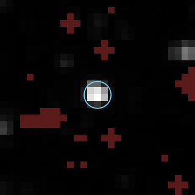
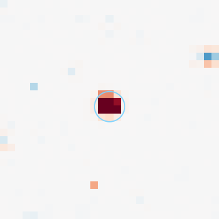
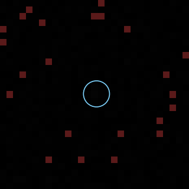
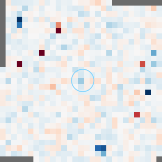
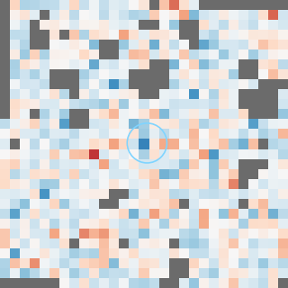

HIPPARCHUS · Judge Mode
OBSERVE → VERIFY → CHALLENGE → EXPLAIN
HIPPARCHUS does not just show the difference between two SPHEREx images. It checks whether the difference can be interpreted (same detector, same wavelength, clean pixels), challenges the result with other reasonable analysis choices, and keeps the evidence back to the NASA archive. Three real cases, precomputed from cached SPHEREx cutouts, so nothing here waits for a live archive download.
RW Aurigae Measured variability
RW Aur is 2.56× brighter one year later at the same wavelength (0.763/0.770 µm). All 8 valid pairs point the same way; the control star stays within 0.86–1.07.
Observed
RA 76.956°, Dec 30.401°, SPHEREx-D1
56 epochs found, 18 usable
2025-09-01 → 2026-09-09
Verified
8 valid pairs (same detector, |Δλ| ≤ half a channel, clean pixels).
Refused: wavelength mismatch 1480, flagged pixels 1387.
Comparison




Pair shown: 2025W36_1A_0233_3 → 2026W37_1A_0234_3 (the largest |σ|). Real SPHEREx cutouts, later epoch reprojected onto the earlier one; crosshair = target.
| dates (a → b) | λ µm | flux ratio | σ formal | σ with calibration floor* | control star |
|---|---|---|---|---|---|
| 2025-09-02 → 2026-09-08 | 0.763/0.770 | ×2.56 | +175.1 | +12.4 | ×0.86 |
| 2025-09-02 → 2026-09-08 | 0.745/0.752 | ×2.50 | +173.5 | +12.0 | ×1.07 |
| 2026-03-10 → 2026-09-08 | 0.774/0.770 | ×1.50 | +84.8 | +4.0 | ×0.89 |
| 2025-09-02 → 2026-03-08 | 0.763/0.757 | ×1.67 | +84.4 | +5.3 | ×0.90 |
| 2026-03-08 → 2026-09-08 | 0.757/0.752 | ×1.42 | +80.3 | +3.4 | ×0.97 |
| 2025-09-02 → 2026-03-08 | 0.745/0.739 | ×1.62 | +80.3 | +4.9 | ×0.95 |
| 2025-09-02 → 2026-03-10 | 0.781/0.774 | ×1.41 | +55.0 | +3.2 | |
| 2025-09-03 → 2026-03-04 | 0.878/0.878 | ×1.09 | +18.5 | +0.7 |
* Formal error plus the field-star calibration floor; blank where no floor could be measured (fewer than 3 pairs with reference stars). Blank control star: none passed the criteria in that pair.
Uncertainty
Each σ is the formal error from the SPHEREx variance planes, propagated through sky subtraction and reprojection (checked: blank-sky null test spread 0.91, ideal 1). A calibration floor of 12.5% from field stars is shown separately. With 8 pairs tested, the chance of any false 5σ event is 4.6e-06.
Challenged: stability fingerprint
- robust brightened by at least x1.5 at >= 5 sigma in some pair (24/24 checks)
- sensitive every valid pair brighter later, at least one >= 5 sigma (18/24 checks)
| aperture px \ sky annulus px | 3.5–6.0 | 4.0–7.0 | 5.0–8.0 |
|---|---|---|---|
| 1.5 | ×2.43 189.6σ | ×2.43 179.0σ | ×2.43 180.6σ |
| 2.0 (used) | ×2.56 201.8σ | ×2.56 175.1σ | ×2.56 178.6σ |
| 2.5 | ×2.58 198.1σ | ×2.58 160.5σ | ×2.58 160.1σ |
| 3.0 | ×2.58 191.4σ | ×2.58 136.6σ | ×2.58 136.1σ |
Cells test “brightened by at least x1.5 at >= 5 sigma in some pair”: green holds, red fails, grey = some pair not measurable. Value: strongest ratio and largest |σ|. Labels follow a fixed rule (robust = all checks, sensitive = at least half); they are not probabilities.
Limitations
- The 175σ value is the formal statistical significance. With the 12.5% calibration floor measured from field stars it is at most 12.4σ; the size of the change (×2.5) is the robust result.
- SPHEREx pixels are 6.15″, so the aperture holds both stars of the RW Aur binary (1.6″ apart) and a faint G = 18.8 star: this is the combined light of the system.
- The field-star calibration uses only 0–2 reference stars per cutout, so the 12.5% floor is itself uncertain.
- “Brighter in every pair” is sensitive: it fails with a 1.5 px aperture. “At least ×1.5 at ≥5σ” holds in every check.
- RW Aur is a known variable young star: a measurement, not a discovery.
Provenance
- spherex_dr1 archive query
sha256 834b363072d7aa85… - spherex_qr3 archive query
sha256 2231193d531ff012… - Datasets: SPHEREx DR1 doi:10.26131/IRSA678, QR3 doi:10.26131/IRSA662 (NASA/IPAC IRSA)
- Every cutout URL and SHA-256: evidence capsule (JSON) · full evidence file
Barnard's Star Comparison refused
All 58 epochs are saturated or flagged at the star. HIPPARCHUS refuses to compare instead of reporting a fake change.
Observed
RA 269.4463°, Dec 4.7667°, SPHEREx-D6
58 epochs found, 0 usable
2025-08-15 → 2026-08-20
Verified
0 valid pairs (same detector, |Δλ| ≤ half a channel, clean pixels).
Refused: wavelength mismatch 1579, flagged pixels 1653, bad variance 57, nan pixels 57.
Comparison

One real epoch (flagged pixels marked). Reasons recorded for this epoch: Pixels on the target are flagged: BLOOM (6 px), OVERFLOW (2 px), SUR_ERROR (2 px), TRANSIENT (4 px).
Uncertainty
No measurement, so no uncertainty: the comparison is refused.
Challenged: stability fingerprint
No stability grid: there is no valid pair to vary the settings on.
Limitations
- Refused because every epoch is saturated or flagged at the star in detector 6; this is a property of the data, not of our settings.
- Barnard's Star moves 10″ per year (1.7 px), so the preset position is propagated; the catalogue match puts it 0.88 px from SIMBAD.
Provenance
- spherex_dr1 archive query
sha256 23cc26bfc22962c6… - spherex_qr3 archive query
sha256 9e5a4e0988c3b501… - Datasets: SPHEREx DR1 doi:10.26131/IRSA678, QR3 doi:10.26131/IRSA662 (NASA/IPAC IRSA)
- Every cutout URL and SHA-256: evidence capsule (JSON) · full evidence file
WISE 0855-0714 No significant change
27 valid pairs, none changes by 5σ or more (largest |σ| = 1.9). The significances scatter like noise.
Observed
RA 133.76°, Dec -7.2424°, SPHEREx-D6
45 epochs found, 37 usable
2025-05-05 → 2026-05-11
Verified
27 valid pairs (same detector, |Δλ| ≤ half a channel, clean pixels).
Refused: wavelength mismatch 952, flagged pixels 324.
Comparison




Pair shown: 2025W46_1A_0238_1 → 2026W17_1B_0634_2 (the largest |σ|). Real SPHEREx cutouts, later epoch reprojected onto the earlier one; crosshair = target.
| dates (a → b) | λ µm | flux ratio | σ formal | σ with calibration floor* | control star |
|---|---|---|---|---|---|
| 2025-11-10 → 2026-04-23 | 4.629/4.644 | ×0.51 | -1.9 | ||
| 2025-11-10 → 2026-04-22 | 4.510/4.510 | ×1.94 | +1.4 | ||
| 2025-05-05 → 2025-11-14 | 4.967/4.979 | ×2.92 | +1.3 | ||
| 2025-11-14 → 2026-05-11 | 4.979/4.967 | ×0.47 | -1.2 | ||
| 2025-12-12 → 2026-04-23 | 4.629/4.644 | ×0.68 | -1.1 | ||
| 2025-11-10 → 2025-12-12 | 4.629/4.629 | ×0.74 | -1.0 | ||
| 2026-04-26 → 2026-05-08 | 4.815/4.825 | ×0.42 | -1.0 | ||
| 2025-11-14 → 2026-05-08 | 4.836/4.825 | ×0.51 | -1.0 | ||
| 2025-05-05 → 2025-11-14 | 4.860/4.871 | ×1.75 | +1.0 | ||
| 2026-04-30 → 2026-05-08 | 4.825/4.825 | ×0.60 | -1.0 | ||
| 2025-11-10 → 2026-04-21 | 4.444/4.447 | ×0.69 | -0.9 | ||
| 2025-05-05 → 2026-05-09 | 4.860/4.860 | ×1.64 | +0.8 | ||
| 2025-11-10 → 2025-11-10 | 4.611/4.629 | ×1.32 | +0.8 | ||
| 2025-11-14 → 2026-04-26 | 4.801/4.815 | ×0.76 | -0.6 | ||
| 2025-11-10 → 2026-04-22 | 4.576/4.578 | ×1.21 | +0.6 | ||
| 2025-05-05 → 2026-05-11 | 4.967/4.967 | ×1.70 | +0.5 | ||
| 2026-04-26 → 2026-05-09 | 4.932/4.931 | ×1.52 | +0.5 | ||
| 2025-11-14 → 2026-04-26 | 4.943/4.932 | ×0.71 | -0.4 | ||
| 2025-11-10 → 2025-12-12 | 4.611/4.629 | ×1.12 | +0.3 | ||
| 2025-11-14 → 2026-04-26 | 4.767/4.780 | ×1.31 | +0.3 | ||
| 2026-04-26 → 2026-05-09 | 4.895/4.895 | ×-2.12 | -0.3 | ||
| 2025-11-14 → 2026-05-09 | 4.871/4.860 | ×0.90 | -0.2 | ||
| 2025-11-14 → 2026-04-30 | 4.836/4.825 | ×0.93 | -0.2 | ||
| 2026-04-26 → 2026-04-30 | 4.815/4.825 | ×0.96 | -0.1 | ||
| 2025-11-10 → 2026-04-21 | 4.412/4.414 | ×1.03 | +0.1 | ||
| 2025-11-10 → 2026-04-23 | 4.611/4.609 | ×0.98 | -0.0 | ||
| 2025-11-14 → 2026-05-09 | 4.943/4.931 | ×1.00 | -0.0 |
* Formal error plus the field-star calibration floor; blank where no floor could be measured (fewer than 3 pairs with reference stars). Blank control star: none passed the criteria in that pair.
Uncertainty
Each σ is the formal error from the SPHEREx variance planes, propagated through sky subtraction and reprojection (checked: blank-sky null test spread 0.91, ideal 1). With 27 pairs tested, the chance of any false 5σ event is 1.5e-05.
Challenged: stability fingerprint
- robust no pair changes by >= 5 sigma (34/34 checks)
| aperture px \ sky annulus px | 3.5–6.0 | 4.0–7.0 | 5.0–8.0 |
|---|---|---|---|
| 1.5 | ×5.23 2.8σ | ×4.70 2.8σ | ×5.33 2.7σ |
| 2.0 (used) | ×3.29 1.9σ | ×2.92 1.9σ | ×3.37 1.6σ |
| 2.5 | ×188.64 2.4σ | ×3.72 2.0σ | ×3.84 1.7σ |
| 3.0 | ×3.36 1.6σ | ×1.67 1.7σ | ×1.41 1.3σ |
Cells test “no pair changes by >= 5 sigma”: green holds, red fails, grey = some pair not measurable. Value: strongest ratio and largest |σ|. Labels follow a fixed rule (robust = all checks, sensitive = at least half); they are not probabilities.
Limitations
- Faint target (median S/N ≈ 2.7 per epoch): “no change” means no change above about 5σ of these errors, not that the object is constant.
- No field star passes the reference-star criteria in these cutouts, so no calibration floor could be measured.
- Only 4 settings keep every pair measurable; the claim holds in all 4 and in every leave-one-out and wavelength-rule check.
- A G = 16.3 field star lies 6.8″ away, inside the aperture.
Provenance
- spherex_dr1 archive query
sha256 a0fe4ffce0576783… - spherex_qr3 archive query
sha256 96a415e87dde6c01… - Datasets: SPHEREx DR1 doi:10.26131/IRSA678, QR3 doi:10.26131/IRSA662 (NASA/IPAC IRSA)
- Every cutout URL and SHA-256: evidence capsule (JSON) · full evidence file